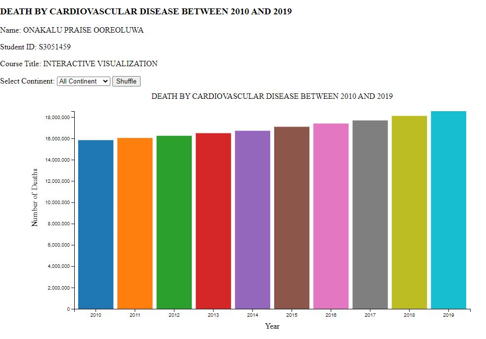

Explore Our Interactive Global Cause of Death Dataset
Discover historical data on various causes of death across different age groups worldwide.
Dive into key features such as Meningitis, Alzheimer's Disease, Nutritional Deficiencies, Malaria, Cardiovascular Diseases, and many more.

Pranith's visualisation captures the overarching narrative of mortality rates across various countries over time. By plotting the mortality rates on the y-axis against the years on the x-axis, we aim to identify any discernible patterns or trends. The line chart allows us to observe how mortality rates have fluctuated over the years, offering insights into the overall health trajectories of different nations.

Solomon uses an horizontal bar chart to showcase the top 10 leading causes of death globally from 2010 to 2019. Each bar represents a cause of death, with its length proportional to the mortality rate attributed to that cause. This visualisation provides a clear and concise overview of the predominant causes of mortality over the past decade, facilitating comparisons and trend analysis.

Naumann's Chart focuses on the disparities in mortality rates across different continents. This visualisation utilises a pie chart to highlight regions with the highest and lowest mortality rates for specific causes of death. Through color gradients or shading, we can effectively convey the disparities, enabling viewers to discern patterns and variations across continents.

Praise focused specifically on Cardiovascular Disease (CVD), this visualisation employs a grouped bar chart to illustrate how the prevalence of CVD, as the leading cause of death, has evolved over time. By grouping the data by year, we can compare the mortality rates associated with CVD across different time periods, offering insights into the progress or challenges in addressing this critical health issue.